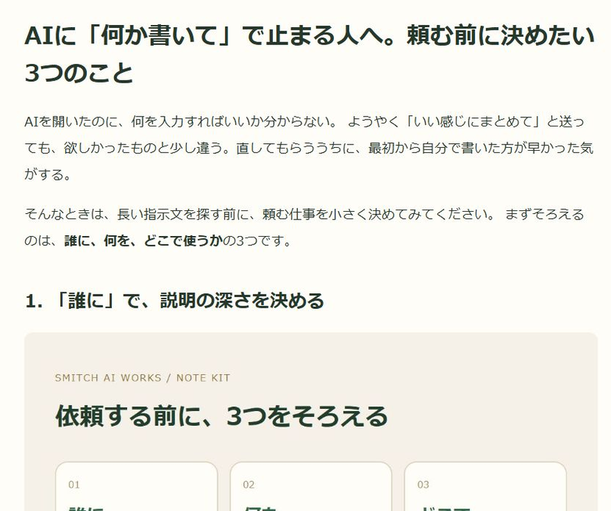
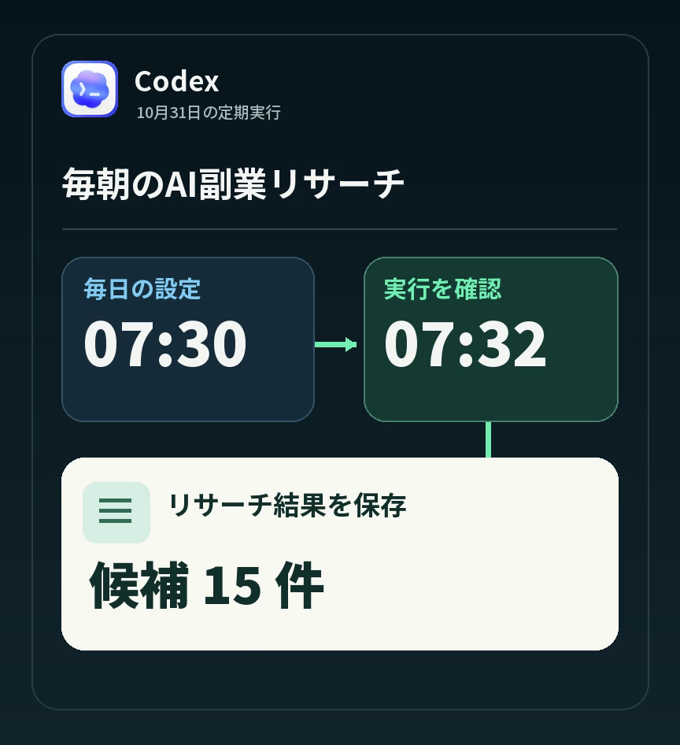

すみっち式 AI副業 はじめの1商品実践ガイド
僕は、寝る前の30分から
AIを触り始めた。
22時に帰宅
今ゼロからなら、まず挑戦しやすいものから。今夜は、一人に渡せるものを決めてみてください。
作るものが変わっても、
見る順番は同じ。
- 相手を決める誰が、どこで困る？
- 試作を渡す何を渡せば使える？
- 反応を見る使われた？ 買われた？
note
会議を共有する人 → 要約の記入例
自分の会議でも使えた？
LINEスタンプ
送迎する家族 →「着いたよ」のラフ
どの言葉を実際に送る？
LP制作
予約案内に困る教室 → 申込の1画面
予約ボタンまで迷わず進める？
5分場面を選ぶ
10分一部分を作る
10分使って直す
5分保存と次の一手
商品を一つに絞る共通指示文を見る
私はAIを使って、最初の商品を1つ試します。次の内容をもとに、誰のどの場面に絞るか、使った直後にできること、渡すもの1つを一文でつないでください。 相手と困っている場面：【 】 自分が持っている材料や経験：【 】 作りたい商品候補：【 】 すでに確認した反応・購入・実利用：【 】 繰り返した作業：【 】 次に、今日30分で作る下書き、その確認方法、見せる相手、表示数以外で見る一つの反応を返してください。候補が複数あるときは、今ある材料で一人に見せられるものを一つ選び、理由を一文で説明してください。 購入または実利用と、同じ作業の繰り返しを両方確認できた場合に限り、AIへ渡せる作業を一つ挙げ、入力・出力・人の確認を示してください。確認できなければ、次に試す一手を一つ返してください。 渡していない体験、反応、売上は足さず、不明な欄は「要確認」としてください。公開・送信・予約・購入は行わず、下書きで返してください。ChatGPTを開く
リールに出したnoteの作例
「会議をまとめて」に
僕なら何を足すか。

- 誰に
- 打ち合わせを欠席した上司
- 何を
- 決定事項・担当者・期限
- どこで
- 社内チャット
自分の題材に替えてChatGPTへ。本文を直してnoteに下書き保存。
下書きを作る指示文を見る
私は最初のnoteを1本作ります。下の材料から、読む相手、困る場面、読んで持ち帰れるものを一つずつ決めてください。商品メモ、題名の案1つ、見出し3つと各見出しの短い本文、記入例1つの順でまとめてください。 読者候補：【ChatGPTで職場の文章を作りたい会社員】 困る場面：【何を入力すれば欲しい文章になるか分からない】 使える材料：【誰に・何を・どこで使うかの3行。打ち合わせを欠席した上司へ、決定事項・担当者・期限を社内チャットで伝える記入例】 今日使える時間：【30分】 手元の材料だけで作れる範囲に収めてください。体験談、売上、購入者の声は、私が渡したものだけ使ってください。困りごとが広ければ、記入例で答えられる一場面に絞ってください。ChatGPTを開く
公開前にどこを直すか確かめる
下書きの中で、相手・用途・事実が曖昧な箇所を拾ってから、自分の言葉に直します。
下のnote下書きを、【ChatGPTで職場の文章を作りたい会社員】が読む前提で確認してください。この人が【誰に・何を・どこで使うか】を、自分の仕事で一度書けるかを見てください。 題名の約束に対して、本文のどこで手が止まるかを一つ指摘し、その箇所だけの修正文を出してください。元の筆者の経験や実績は加えず、記入例と指示文の言葉が一致しているかも点検してください。 下書き 【ここに note-draft.txt の本文を貼る】 最後に、元の材料にない数字・担当者・期限を見つけたら「要確認」として挙げてください。note公式の下書き・プレビュー案内
練習用メモ期限は未定→回答見本期限は「未確認」
記事の練習用完成見本を保存（TXT）
売れたものは、
繰り返す作業を仕組みに。

候補集めはAI、題材選びは自分。
自分の商品なら、毎回同じ手間から。noteなら「相手・用途・期限」の確認を任せます。
AIへ確認作業を渡す指示文を見る
商品は【AIに「何か書いて」で止まる人へ。頼む前に決めたい3つのこと】です。以下は実際に取れた反応の記録です。未確認の欄はそのまま空欄として扱ってください。 記事への案内と反応：【reaction-log.txt の1回分を貼る】 自分が繰り返した作業：【例：記事で使った3行の見本を、投稿の下書きに抜き出す】 まず、買われたこと、読まれたこと、聞かれたことを記録の事実から整理してください。購入が確認できなければ、次に確かめる反応を一つと、記事か案内で変える箇所を一つ返してください。 購入を確認でき、同じ作業が繰り返し発生していれば、その一つの作業だけを選び、入力、出力、人が確かめる箇所を一行ずつ出してください。自動での公開、送信、購入は行わず、まず下書きで試す手順にしてください。